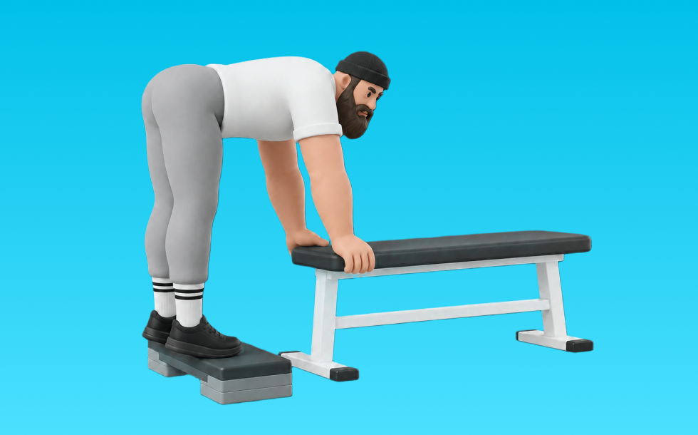

ドンキーカーフレイズ

ドンキーカーフレイズとは、マシンを使って「つま先立ちする」動作でふくらはぎ（腓腹筋、ヒラメ筋）を鍛える種目です。軌道が安定して狙った部位に効かせやすいのが特徴で、かかとを下ろしてから高く上げる動作を繰り返します。ふくらはぎのボリュームアップや足首の安定が期待できます。
- 対象部位
- 脚
- 器具
- マシン
- 記録形式
- 重量・回数
- 別名
- ドンキー
YouTube動画
-
ドンキーカーフレイズのやり方｜ふくらはぎに効かせるコツを解説
-
【脚トレ】ふくらはぎをデカくしたいならこれをやれ！カーフが成長する最強種目3つと方法について徹底的に解説します【筋トレ】
-
ふくらはぎを鍛える自宅トレーニング2分間！カーフレイズの正しいやり方
-
ドンキーカーフレイズ
-
【初心者向けダイエット】ふくらはぎを鍛えて代謝アップ。「ドンキーカーフレイズ」の正しいやり方(2分痩せトレ)
-
【筋トレ】かっこいい脚を手に入れる最強のトレーニング、カーフレイズの注意点とは【脚トレ】
-
カーフレイズでふくらはぎとセットで体幹を鍛える方法
-
【筋トレ】戦場でも逃げ切れる最強の足を手に入れよ！負荷150Kgのドンキーカーフレイズ！
-
【筋トレ】ふくらはぎをデカく！「スタンディングカーフレイズ」by 松尾隆太郎
-
カーフレイズの効果的なやり方｜ふくらはぎを引き締めるための3つのポイント
-
足のアーチ機能を高めるならこれ！シーテッドカーフレイズ
-
【説明2分】カーフレイズのやり方
-
【ふくらはぎ強化】スミスマシンで行うカーフレイズのやり方／筋トレ実践講座
-
【代謝アップ筋トレ】ふくらはぎの筋肉を鍛えて痩せやすい体を手に入れる！シングルレッグカーフレイズのやり方｜#腓腹筋 #ヒラメ筋
-
【ふくらはぎに効く】バーベルカーフレイズ
-
美しい脚を作るトレーニング カーフレイズの効果的なやり方
-
【自宅で簡単】シーテッドカーフレイズ！ふくらはぎに効くコツ〜ダンベルの重量設定まで解説！
-
カーフレイズで効率的にふくらはぎを鍛える方法 【山岸秀匡の切り抜き】
-
バックキックの正しいやり方。脂肪燃焼＆ヒップアップ効果が期待できる！【左右 各10回×3セット】
-
引き締まったふくらはぎを作る！カーフレイズ3選＋α【筋トレ】【自宅トレーニング】
-
【初心者向け】カーフレイズのやり方 〜スミスマシン編〜
-
シッティングカーフレイズのやり方-ふくらはぎを鍛える筋トレ
YouTubeショート
-
ドンキーカーフレイズ
-
正しいダンベルカーフレイズのやり方
-
【SGIR】ジョージとSamと学ぶカーフレイズのポイント
-
スタンディングカーフレイズ
-
ドンキー・カーフレイズ（スミスマシン）
-
【脚トレ】スミスカーフレイズ # #筋トレ解説 #脚トレ #脚トレーニング
-
【筋トレ解説】カーフレイズ2種目で腓腹筋とヒラメ筋を鍛える！#脚トレ #カーフレイズ #ふくらはぎ #筋トレ #ボディビル #破壊 #wbd
-
ふくらはぎの筋トレ【カーフレイズ】1分解説！自重片足30回×3セットづつ
-
【安全のために必ずセーフティを】 #筋トレ #パーソナルジム #パーソナルジム #富山 #ふくらはぎ #カーフレイズ
-
カーフレイズオンレッグプレスマシン（Calf Raise on Leg Press Machine）のやり方とフォーム
-
脚トレはランジ。#脚トレ #トレーニング #ジム #脚痩せ #ダイエット #フィジーク #筋トレ
-
カーフレイズ（ダンベル抱えて）
-
絶対買うべき筋トレ器具 #筋トレ #ホームトレーニング #トレーニング #筋肉 #ホームトレーニー #ボディビル #フィジーク
-
シーテッド・カーフレイズ／ヒラメ筋（ふくらはぎ）／筋トレ実践講座
-
ふくらはぎ強くしたい#アストレ #部活
-
カーフレイズ
-
ワンレッグカーフレイズ ECC
-
スタンディングカーフレイズ
-
シーテッドカーフレイズにこの世の真理が詰まっている。 #筋トレ #アラフィフ #懸垂
-
カーフレイズ／下腿三頭筋（ふくらはぎ）／筋トレ実践講座
-
ワンレッグカーフレイズ～YOLO vol.6 誌面連動／トレーニングMOVIE～
-
【美脚トレ】ふくらはぎを鍛えて脚のむくみ解消 | カーフレイズのやり方【キレイナデシコ Fitness】
-
山を走ると足がムキムキになります。 #ランニング #筋トレ女子 #アスリート女子
-
【THAT'Sトレーニング】100レップス法カーフレイズ
-
100倍効果的にお尻を鍛える筋トレ方法 #shorts
動作方法
- 足幅を決め、体幹を固める
- 股関節と膝を同時に曲げて下ろす
- 足裏全体で床を押して立ち上がる
動作ポイント
- 膝とつま先の向きをそろえる
- 胸を落としすぎない
- かかとを浮かせない
ワンポイントアドバイス
- ウォームアップで股関節と足首を動かす
- 高重量の日はセーフティ設定を確認する
目的別回数設定
目的や体力に応じた一般的な目安です。無理のない範囲で調整してください。
- 筋力アップ
- 1〜5回
- 筋肥大
- 6〜12回
- 持久力アップ
- 13〜20回
YouTube動画について
動画はYouTubeの公開情報をもとに表示しています。内容は投稿者によるもので、Biggrによる監修ではありません。
アプリを入手
筋トレやトレーニングの記録はBiggrにお任せください。今すぐ無料で使い始められます。